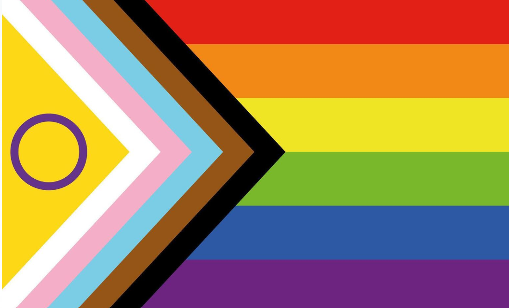

I've spent decades supporting family members, friends, and private clients through complicated situations, from everyday caregiving to navigating health care, education, and disability services. I enjoy putting that experience to work helping others.
My experience is both hands-on and organizational. I've provided direct care and companionship, supported families through illness and difficult life transitions, and spent years professionally managing complex programs involving many people, priorities and decisions. My work in ethics, inclusion and community advocacy also shapes how I support individuals and families.
Experience I bring
This experience comes from personal advocacy, family caregiving, paid support and professional work. I don't hold clinical qualifications.
Health Care & Complex Needs
- Pediatric and adult cancer, including survivorship and long-term care needs
- Chronic and undiagnosed pain, mental health, and complex health conditions
- Navigating health services, specialists and appointments
- Advocating for respectful, equitable care when bias affects treatment
Aging, Dementia & Family Care
- Dementia support, safety, and companionship
- Hospice, end-of-life care, and caregiver respite
- In-home assistance and daily living support
- Supporting families through changing care needs
Children, Youth & Education
- Navigating public and private school systems
- Psychoeducational assessments, IEPs and school advocacy
- Post-secondary supports, including accessibility services and scholarships
- Supporting LGBTQIA+ youth and families, including access to affirming care
Disability, Benefits & Community Resources
- Disability Tax Credit applications and related supports
- Researching funding, benefits, scholarships, and assistance programs
- Navigating government and community services, and following up on applications
I can help you understand your options, prepare for appointments or conversations, organize information and paperwork, and work through practical next steps.

My approach is practical, respectful, inclusive and LGBTQIA+-affirming.